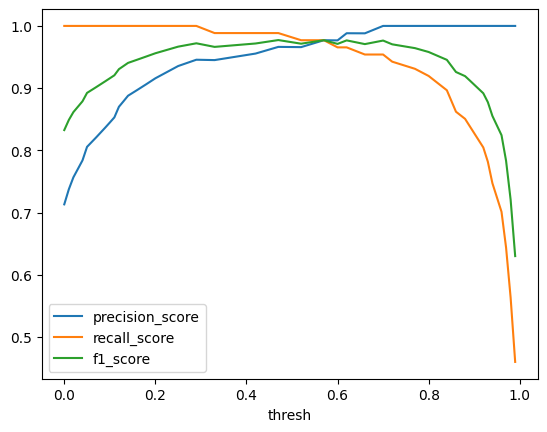
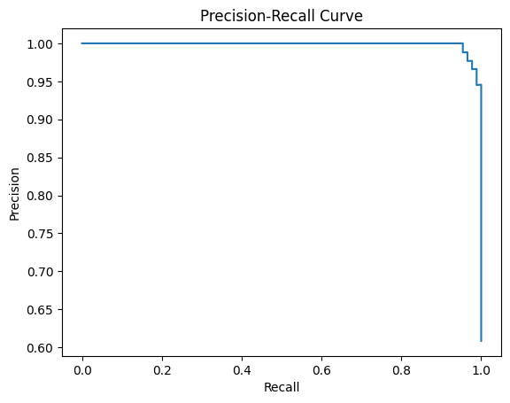
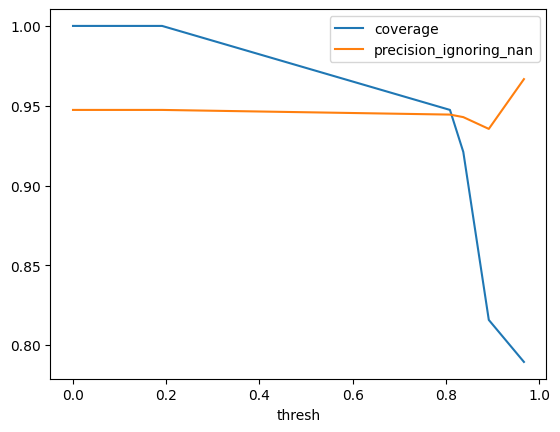

import sklearn.datasets
from sklearn import metrics
from sklearn.ensemble import RandomForestClassifier
from sklearn.model_selection import train_test_split
from model_inspector import get_inspectorClassifier
Inspector functionality specific to classification models
Binary Classification
X, y = sklearn.datasets.load_breast_cancer(return_X_y=True, as_frame=True)
X_train, X_test, y_train, y_test = train_test_split(X, y)
inspector = get_inspector(
RandomForestClassifier().fit(X_train, y_train),
X_test,
y_test,
)/Users/greg/repos/model_inspector/model_inspector/inspect/any_model.py:56: UserWarning: `model` does not have the `feature_names_in_`
attribute, so we cannot confirm that `model`'s feature
names match `X`'s column names. Proceed at your own
risk!
warnings.warn(_BinInspector.calculate_metrics_by_thresh
_BinInspector.calculate_metrics_by_thresh (metrics:Union[Callable,Sequen ce[Callable]], thresholds:Opti onal[Sequence]=None)
Calculate classification metrics as a function of threshold
Assumes that self.model has a .predict_proba() method. Uses self.y as ground-truth values, self.model.predict_proba(self.X)[:, 1] > thresh as predictions.
Parameters:
metrics: Callables that takey_true,y_predas positional arguments and return a number. Must have a__name__attribute.thresholds:Sequenceoffloatthreshold values to use. By default uses0and the values that appear iny_prob[:, 1], which is a minimal set that covers all of the relevant possibilities. One reason to override that default would be to save time with a large dataset.
Returns: DataFrame with one column “thresh” indicating the thresholds used and an additional column for each input metric giving the value of that metric at that threshold.
metrics_by_thresh = inspector.calculate_metrics_by_thresh(
metrics=[metrics.precision_score, metrics.recall_score, metrics.f1_score],
).iloc[
:-1
] # dropping last row where precision is undefined
with pd.option_context("display.max_rows", 10):
display(metrics_by_thresh) # noqa: F821 43%|████▎ | 18/42 [00:00<00:00, 178.48it/s]/Users/greg/.pyenv/versions/model_inspector/lib/python3.10/site-packages/sklearn/metrics/_classification.py:1344: UndefinedMetricWarning: Precision is ill-defined and being set to 0.0 due to no predicted samples. Use `zero_division` parameter to control this behavior.
_warn_prf(average, modifier, msg_start, len(result))
100%|██████████| 42/42 [00:00<00:00, 232.76it/s]| thresh | precision_score | recall_score | f1_score | |
|---|---|---|---|---|
| 0 | 0.00 | 0.713115 | 1.000000 | 0.832536 |
| 1 | 0.00 | 0.713115 | 1.000000 | 0.832536 |
| 2 | 0.01 | 0.737288 | 1.000000 | 0.848780 |
| 3 | 0.02 | 0.756522 | 1.000000 | 0.861386 |
| 4 | 0.04 | 0.783784 | 1.000000 | 0.878788 |
| ... | ... | ... | ... | ... |
| 36 | 0.94 | 1.000000 | 0.747126 | 0.855263 |
| 37 | 0.96 | 1.000000 | 0.701149 | 0.824324 |
| 38 | 0.97 | 1.000000 | 0.643678 | 0.783217 |
| 39 | 0.98 | 1.000000 | 0.563218 | 0.720588 |
| 40 | 0.99 | 1.000000 | 0.459770 | 0.629921 |
41 rows × 4 columns
ax = metrics_by_thresh.plot(x="thresh")
_BinInspector.plot_pr_curve
_BinInspector.plot_pr_curve (ax:Optional[matplotlib.axes._axes.Axes]=Non e, pos_label=None, sample_weight=None)
Plot the precision-recall curve.
Parameters:
ax: MatplotlibAxesobject. Plot will be added to this object if provided; otherwise a newAxesobject will be generated.
Remaining parameters are passed to model_inspector.tune.plot_pr_curve.
ax = inspector.plot_pr_curve()
_BinInspector.confusion_matrix
_BinInspector.confusion_matrix (thresh:float=0.5, labels=None, sample_weight=None, normalize=None)
Get confusion matrix
Assumes that self.model has a .predict_proba() method. Uses self.y as ground-truth values, self.model.predict_proba(self.X)[:, 1] > thresh as predictions.
If output is not rendering properly when you reopen a notebook, make sure the notebook is trusted.
Parameters:
thresh: Probability threshold for counting a prediction as positive
Remaining parameters are passed to sklearn.metrics._classification.confusion_matrix.
inspector.confusion_matrix(
thresh=metrics_by_thresh.loc[metrics_by_thresh.f1_score.idxmax(), "thresh"]
)| Predicted 0 | Predicted 1 | Totals | |
|---|---|---|---|
| Actual 0 | 53 | 3 | 56 |
| Actual 1 | 1 | 86 | 87 |
| Totals | 54 | 89 | 143 |
Multiclass Classification
from functools import partial
from model_inspector.tune import calculate_metric_ignoring_nan, coverageprecision_ignoring_nan = partial(
calculate_metric_ignoring_nan,
metric=partial(metrics.precision_score, average="micro"),
)
precision_ignoring_nan.__name__ = "precision_ignoring_nan"
X, y = sklearn.datasets.load_iris(return_X_y=True, as_frame=True)
X_train, X_test, y_train, y_test = train_test_split(X, y, random_state=2)
inspector = get_inspector(
RandomForestClassifier().fit(X_train.iloc[:, [3]], y_train),
X_test.iloc[:, [3]],
y_test,
)/Users/greg/repos/model_inspector/model_inspector/inspect/any_model.py:56: UserWarning: `model` does not have the `feature_names_in_`
attribute, so we cannot confirm that `model`'s feature
names match `X`'s column names. Proceed at your own
risk!
warnings.warn(_MultiInspector.calculate_metrics_by_thresh
_MultiInspector.calculate_metrics_by_thresh (metrics:Union[Callable,Sequ ence[Callable]], thresholds: Optional[Sequence]=None)
Calculate classification metrics as a function of threshold
Assumes that self.model has a .predict_proba() method. Uses self.y as ground-truth values, uses the value with the highest probability as the prediction if that probability exceeds the threshold, np.nan otherwise.
Parameters:
metrics: Callables that takey_true,y_predas positional arguments and return a number. Must have a__name__attribute and must be able to handlenp.nanvalues.thresholds:Sequenceoffloatthreshold values to use. By default uses 0 and all values that appear iny_prob, which is a minimal set that covers all of the relevant possibilities. One reason to override that default would be to save time with a large dataset.
Returns: DataFrame with one column “thresh” indicating the thresholds used and an additional column for each input metric giving the value of that metric at that threshold.
metrics_by_thresh = inspector.calculate_metrics_by_thresh(
metrics=[coverage, precision_ignoring_nan],
).iloc[
:-1
] # dropping last row where precision is undefined
metrics_by_thresh 0%| | 0/13 [00:00<?, ?it/s]/Users/greg/.pyenv/versions/model_inspector/lib/python3.10/site-packages/sklearn/metrics/_classification.py:1344: UndefinedMetricWarning: Precision is ill-defined and being set to 0.0 due to no predicted samples. Use `zero_division` parameter to control this behavior.
_warn_prf(average, modifier, msg_start, len(result))
100%|██████████| 13/13 [00:00<00:00, 2202.71it/s]| thresh | coverage | precision_ignoring_nan | |
|---|---|---|---|
| 0 | 0.000000 | 1.000000 | 0.947368 |
| 1 | 0.000000 | 1.000000 | 0.947368 |
| 2 | 0.023326 | 1.000000 | 0.947368 |
| 3 | 0.032452 | 1.000000 | 0.947368 |
| 4 | 0.107819 | 1.000000 | 0.947368 |
| 5 | 0.162547 | 1.000000 | 0.947368 |
| 6 | 0.191166 | 1.000000 | 0.947368 |
| 7 | 0.808834 | 0.947368 | 0.944444 |
| 8 | 0.837453 | 0.921053 | 0.942857 |
| 9 | 0.892181 | 0.815789 | 0.935484 |
| 10 | 0.967548 | 0.789474 | 0.966667 |
| 11 | 0.976674 | 0.736842 | 1.000000 |
ax = metrics_by_thresh.iloc[:-1].plot(x="thresh")
_MultiInspector.confusion_matrix
_MultiInspector.confusion_matrix (cmap:str|Colormap='PuBu', low:float=0, high:float=0, axis:Axis|None=0, subset:Subset|None=None, text_color_threshold:float=0.408, vmin:float|None=None, vmax:float|None=None, gmap:Sequence|None=None)
Get confusion matrix
Uses self.y as ground-truth values, self.model.predict(self.X) as predictions.
If output is not rendering properly when you reopen a notebook, make sure the notebook is trusted.
Remaining parameters are passed to pandas.io.formats.style.background_gradient.
inspector.confusion_matrix()| Predicted 0 | Predicted 1 | Predicted 2 | Totals | |
|---|---|---|---|---|
| Actual 0 | 16 | 0 | 0 | 16 |
| Actual 1 | 0 | 10 | 1 | 11 |
| Actual 2 | 0 | 1 | 10 | 11 |
| Totals | 16 | 11 | 11 | 38 |